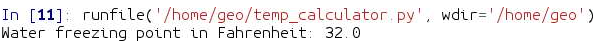

Functions¶
Sources¶
This lesson is partly based on the Software Carpentry group’s lessons on Programming with Python.
What is a function?¶
A function is a block of organized, reusable code that can make your scripts more effective, easier to read, and simple to manage.
You can think functions as little self-contained programs that can perform a specific task which you can use repeatedly in your code.
One of the basic principles in good programming is “do not to repeat yourself”.
In other words, you should avoid having duplicate lines of code in your scripts.
Functions are a good way to avoid such situations and they can save you a lot of time and effort as you don’t need to tell the computer repeatedly what to do every time it does a common task, such as converting temperatures from Fahrenheit to Celsius.
During the course we have already used some functions such as the print() command which is actually a built-in function in Python.
Anatomy of a function¶
Let’s consider the task from the first lesson when we converted temperatures from Celsius to Fahrenheit. Such an operation is a fairly common task when dealing with temperature data. Thus we might need to repeat such calculations quite frequently when analysing or comparing weather or climate data between the US and Europe, for example.
Let’s define our first function called
celsiusToFahr:In [1]: def celsiusToFahr(tempCelsius): ...: return 9/5 * tempCelsius + 32 ...:

Anatomy of a function
The function definition opens with the keyword
deffollowed by the name of the function and a list of parameter names in parentheses. The body of the function — the statements that are executed when it runs — is indented below the definition line.When we call the function, the values we pass to it are assigned to the corresponding parameter variables so that we can use them inside the function (e.g., the variable
tempCelsiusin this function example). Inside the function, we use a return statement to define the value that should be given back when the function is used, or called).
Calling functions¶
Now let’s try using our function. Calling our self-defined function is no different from calling any other function such as
print(). You need to call it with its name and send your value to the required parameter(s) inside the parentheses:In [2]: freezingPoint = celsiusToFahr(0) In [3]: print('The freezing point of water in Fahrenheit is:', freezingPoint) The freezing point of water in Fahrenheit is: 32.0 In [4]: print('The boiling point of water in Fahrenheit is:', celsiusToFahr(100)) The boiling point of water in Fahrenheit is: 212.0Now that we know how to create a function to convert Celsius to Fahrenheit, let’s create another function called
kelvinsToCelsius:In [5]: def kelvinsToCelsius(tempKelvins): ...: return tempKelvins - 273.15 ...:
And let’s use it in the same way as the earlier one:
In [6]: absoluteZero = kelvinsToCelsius(tempKelvins=0) In [7]: print('Absolute zero in Celsius is:', absoluteZero) Absolute zero in Celsius is: -273.15
What about converting Kelvins to Fahrenheit? We could write out a new formula for it, but we don’t need to. Instead, we can do the conversion using the two functions we have already created and calling those from the function we are now creating:
In [8]: def kelvinsToFahrenheit(tempKelvins): ...: tempCelsius = kelvinsToCelsius(tempKelvins) ...: tempFahr = celsiusToFahr(tempCelsius) ...: return tempFahr ...:
Now let’s use the function:
In [9]: absoluteZeroF = kelvinsToFahrenheit(tempKelvins=0) In [10]: print('Absolute zero in Fahrenheit is:', absoluteZeroF) Absolute zero in Fahrenheit is: -459.66999999999996
Saving and loading functions¶
Functions such as the ones we just created can also be called from another script.
In fact, quite often it is useful to create a dedicated function library for functions that you use frequently, when doing data analysis, for example.
Basically this is done by listing useful functions in a single .py file from which you can then import and use them whenever needed.
Saving functions in a script file¶
Before we can import our functions we need to create a new script file and save the functions that we just created into a Python file called temp_converter.py.
We could write the functions again into our script file but we can also take advantage of the History log tab in Spyder where we should find all commands that we typed in the IPython console [1]:

The history log in Spyder
Copy and paste (only) the functions that we wrote earlier from the History log tab and save them in the
temp_converter.pyscript (optionally you can just write them again into the file if you want the practice ). It should look like following:
The
temp_converter.pyscript. Note that our function names differ slightly from those in the image.
Calling functions from another script file¶
Now that we have saved our temperature conversion functions into a script file we can start using them.
Let’s create another script file called
calculator.py.Important
Save the file into the same folder where you saved the
temp_converter.pyfile [2].Let’s now import our
celsiusToFahrfunction from the other script by adding a specific import statement at the top of ourcalculator.pyscript. Let’s also use the function so that we can see that it is working [3]:from temp_converter import celsiusToFahr # Testing that the function from another file works print("The freezing point of water in Fahrenheit is:", celsiusToFahr(0))
Run the code by pressing F5 key or by pressing the play button in Spyder. We should now get following output:
Using a function from another script
It is also possible to import more functions at the same time by listing and separating them with a comma
from my_script import func1, func2, func3
Sometimes it is useful to import the whole script and all of its functions at once. Let’s modify the import statement in our script and test that all functions work [4]:
import temp_converter as tc # Testing that all functions from another file work print("The freezing point of water in Fahrenheit is:", tc.celsiusToFahr(0)) print('Absolute zero in Celsius is:', tc.kelvinsToCelsius(tempKelvins=0)) print('Absolute zero in Fahrenheit is:', tc.kelvinsToFahrenheit(tempKelvins=0))
{kind=link}
Temperature calculator (optional, advanced topic)¶
So far our functions have had only one parameter, but it is also possible to define a function with multiple parameters.
Let’s now make a simple tempCalculator function that accepts temperatures in Kelvins and returns either Celsius or Fahrenheit.
The new function will have two parameters:
tempK= The parameter for passing temperature in KelvinconvertTo= The parameter that determines whether to output should be in Celsius or in Fahrenheit (using lettersCorFaccordingly)
Let’s start defining our function by giving it a name and setting the parameters:
def tempCalculator(tempK, convertTo):
Next, we need to add conditional statements that check whether the output temperature is wanted in Celsius or Fahrenheit, and then call corresponding function that was imported from the
temp_converter.pyfile.def tempCalculator(tempK, convertTo): # Check if user wants the temperature in Celsius if convertTo == "C": # Convert the value to Celsius using the dedicated function for the task that we imported from another script convertedTemp = kelvinsToCelsius(tempKelvins=tempK) elif convertTo == "F": # Convert the value to Fahrenheit using the dedicated function for the task that we imported from another script convertedTemp = kelvinsToFahrenheit(tempKelvins=tempK)
Next, we need to add a return statement so that our function sends back the value that we are interested in:
def tempCalculator(tempK, convertTo): # Check if user wants the temperature in Celsius if convertTo == "C": # Convert the value to Celsius using the dedicated function for the task that we imported from another script convertedTemp = kelvinsToCelsius(tempKelvins=tempK) elif convertTo == "F": # Convert the value to Fahrenheit using the dedicated function for the task that we imported from another script convertedTemp = kelvinsToFahrenheit(tempKelvins=tempK) # Return the result return convertedTemp
Lastly, as we want to be good programmers, we add a short docstring at the beginning of our function that tells what the function does and how the parameters work:
def tempCalculator(tempK, convertTo): """ Function for converting temperature in Kelvins to Celsius or Fahrenheit. Parameters ---------- tempK: <numerical> Temperature in Kelvins convertTo: <str> Target temperature that can be either Celsius ('C') or Fahrenheit ('F'). Supported values: 'C' | 'F' Returns ------- <float> Converted temperature. """ # Check if user wants the temperature in Celsius if convertTo == "C": # Convert the value to Celsius using the dedicated function for the task that we imported from another script convertedTemp = kelvinsToCelsius(tempKelvins=tempK) elif convertTo == "F": # Convert the value to Fahrenheit using the dedicated function for the task that we imported from another script convertedTemp = kelvinsToFahrenheit(tempKelvins=tempK) # Return the result return convertedTemp
That’s it! Now we have a temperature calculator that has a simple control for the user where s/he can change the output by using the
convertToparameter. Now as we added the short docstring in the beginning of the function we can use thehelp()function in Python to find out how our function should be used. Run the script and try following:help(tempCalculator)
Let’s use it:
>>> tempKelvin = 30 >>> temperatureC = tempCalculator(tempK=tempKelvin, convertTo="C") >>> print("Temperature", tempKelvin, "in Kelvins is", temperatureC, "in Celsius") Temperature 30 in Kelvins is -243.14999999999998 in Celsius
Footnotes
| [1] | The history log tab can be found from the same panel where we have executed our codes (bottom-right, next to IPython console). |
| [2] | When communicating between script files, it is necessary to keep them in the same folder so that Python can find them (there are other ways but this is the easiest). |
| [3] | Following the principles of good programming import statements that you use should always be written at the top of the script file. |
| [4] | It is also possible to import functions by using specific the from moduleX import *
The downside of using Warning We do not recommend importing functions using this approach as there is a risk of function name conflicts when doing this. Please use with caution |